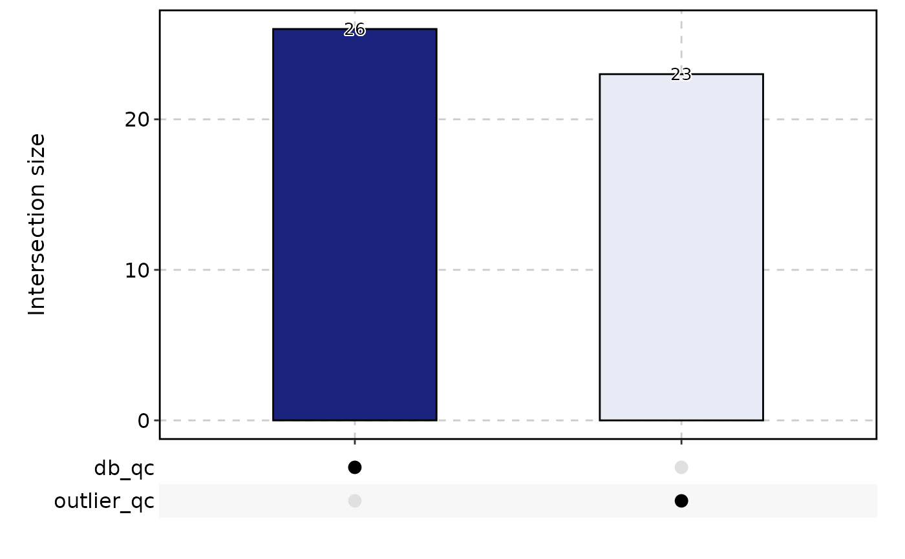

This function handles multiple quality control methods for single-cell RNA-seq data.
Usage
RunCellQC(
srt,
assay = "RNA",
split.by = NULL,
return_filtered = FALSE,
qc_metrics = c("doublets", "outlier", "umi", "gene", "mito", "ribo", "ribo_mito_ratio",
"species"),
db_method = "scDblFinder",
db_rate = NULL,
db_coefficient = 0.01,
outlier_threshold = c("log10_nCount:lower:2.5", "log10_nCount:higher:5",
"log10_nFeature:lower:2.5", "log10_nFeature:higher:5", "featurecount_dist:lower:2.5"),
outlier_n = 1,
UMI_threshold = 3000,
gene_threshold = 1000,
mito_threshold = 20,
mito_pattern = c("MT-", "Mt-", "mt-"),
mito_gene = NULL,
ribo_threshold = 50,
ribo_pattern = c("RP[SL]\\d+\\w{0,1}\\d*$", "Rp[sl]\\d+\\w{0,1}\\d*$",
"rp[sl]\\d+\\w{0,1}\\d*$"),
ribo_gene = NULL,
ribo_mito_ratio_range = c(1, Inf),
species = NULL,
species_gene_prefix = NULL,
species_percent = 95,
seed = 11
)Arguments
- srt
A Seurat object.
- assay
The name of the assay to be used for doublet-calling. Default is
"RNA".- split.by
Name of the sample variable to split the Seurat object. Default is
NULL.- return_filtered
Logical indicating whether to return a cell-filtered Seurat object. Default is
FALSE.- qc_metrics
A character vector specifying the quality control metrics to be applied. Default is
c("doublets", "outlier", "umi", "gene", "mito", "ribo", "ribo_mito_ratio", "species").- db_method
Method used for doublet-calling. Can be one of
"scDblFinder","Scrublet","DoubletDetection","scds_cxds","scds_bcds","scds_hybrid".- db_rate
The expected doublet rate. Default is calculated as
ncol(srt) / 1000 * 0.01.- db_coefficient
The coefficient used to calculate the doublet rate. Default is
0.01. Doublet rate is calculated asncol(srt) / 1000 * db_coefficient.- outlier_threshold
A character vector specifying the outlier threshold. Default is
c("log10_nCount:lower:2.5", "log10_nCount:higher:5", "log10_nFeature:lower:2.5", "log10_nFeature:higher:5", "featurecount_dist:lower:2.5"). See scuttle::isOutlier.- outlier_n
Minimum number of outlier metrics that meet the conditions for determining outlier cells. Default is
1.- UMI_threshold
UMI number threshold. Cells that exceed this threshold will be considered as kept. Default is
3000.- gene_threshold
Gene number threshold. Cells that exceed this threshold will be considered as kept. Default is
1000.- mito_threshold
Percentage of UMI counts of mitochondrial genes. Cells that exceed this threshold will be considered as discarded. Default is
20.- mito_pattern
Regex patterns to match the mitochondrial genes. Default is
c("MT-", "Mt-", "mt-").- mito_gene
A defined mitochondrial genes. If features provided, will ignore the
mito_patternmatching. Default isNULL.- ribo_threshold
Percentage of UMI counts of ribosomal genes. Cells that exceed this threshold will be considered as discarded. Default is
50.- ribo_pattern
Regex patterns to match the ribosomal genes. Default is
c("RP[SL]\\d+\\w{0,1}\\d*$", "Rp[sl]\\d+\\w{0,1}\\d*$", "rp[sl]\\d+\\w{0,1}\\d*$").- ribo_gene
A defined ribosomal genes. If features provided, will ignore the
ribo_patternmatching. Default isNULL.- ribo_mito_ratio_range
A numeric vector specifying the range of ribosomal/mitochondrial gene expression ratios for ribo_mito_ratio outlier cells. Default is
c(1, Inf).- species
Species used as the suffix of the QC metrics. The first is the species of interest. Default is
NULL.- species_gene_prefix
Species gene prefix used to calculate QC metrics for each species. Default is
NULL.- species_percent
Percentage of UMI counts of the first species. Cells that exceed this threshold will be considered as kept. Default is
95.- seed
Set a random seed. Default is
11.
Examples
data(pancreas_sub)
pancreas_sub <- standard_scop(pancreas_sub)
#> StandardPC_ 1
#> Positive: Aplp1, Cpe, Gnas, Fam183b, Map1b, Hmgn3, Pcsk1n, Chga, Tuba1a, Bex2
#> Syt13, Isl1, 1700086L19Rik, Pax6, Chgb, Scgn, Rbp4, Scg3, Gch1, Camk2n1
#> Cryba2, Pcsk2, Pyy, Tspan7, Mafb, Hist3h2ba, Dbpht2, Abcc8, Rap1b, Slc38a5
#> Negative: Spp1, Anxa2, Sparc, Dbi, 1700011H14Rik, Wfdc2, Gsta3, Adamts1, Clu, Mgst1
#> Bicc1, Ldha, Vim, Cldn3, Cyr61, Rps2, Mt1, Ptn, Phgdh, Nudt19
#> Smtnl2, Smco4, Habp2, Mt2, Col18a1, Rpl12, Galk1, Cldn10, Acot1, Ccnd1
#> StandardPC_ 2
#> Positive: Rbp4, Tagln2, Tuba1b, Fkbp2, Pyy, Pcsk2, Iapp, Tmem27, Meis2, Tubb4b
#> Pcsk1n, Dbpht2, Rap1b, Dynll1, Tubb2a, Sdf2l1, Scgn, 1700086L19Rik, Scg2, Abcc8
#> Atp1b1, Hspa5, Fam183b, Papss2, Slc38a5, Scg3, Mageh1, Tspan7, Ppp1r1a, Ociad2
#> Negative: Neurog3, Btbd17, Gadd45a, Ppp1r14a, Neurod2, Sox4, Smarcd2, Mdk, Pax4, Btg2
#> Sult2b1, Hes6, Grasp, Igfbpl1, Gpx2, Cbfa2t3, Foxa3, Shf, Mfng, Tmsb4x
#> Amotl2, Gdpd1, Cdc14b, Epb42, Rcor2, Cotl1, Upk3bl, Rbfox3, Cldn6, Cer1
#> StandardPC_ 3
#> Positive: Nusap1, Top2a, Birc5, Aurkb, Cdca8, Pbk, Mki67, Tpx2, Plk1, Ccnb1
#> 2810417H13Rik, Incenp, Cenpf, Ccna2, Prc1, Racgap1, Cdk1, Aurka, Cdca3, Hmmr
#> Spc24, Kif23, Sgol1, Cenpe, Cdc20, Hist1h1b, Cdca2, Mxd3, Kif22, Ska1
#> Negative: Anxa5, Pdzk1ip1, Acot1, Tpm1, Anxa2, Dcdc2a, Capg, Sparc, Ttr, Pamr1
#> Clu, Cxcl12, Ndrg2, Hnf1aos1, Gas6, Gsta3, Krt18, Ces1d, Atp1b1, Muc1
#> Hhex, Acadm, Spp1, Enpp2, Bcl2l14, Sat1, Smtnl2, 1700011H14Rik, Tgm2, Fam159a
#> StandardPC_ 4
#> Positive: Glud1, Tm4sf4, Akr1c19, Cldn4, Runx1t1, Fev, Pou3f4, Gm43861, Pgrmc1, Arx
#> Cd200, Lrpprc, Hmgn3, Ppp1r14c, Pam, Etv1, Tsc22d1, Slc25a5, Akap17b, Pgf
#> Fam43a, Emb, Jun, Krt8, Dnajc12, Mid1ip1, Ids, Rgs17, Uchl1, Alcam
#> Negative: Ins2, Ins1, Ppp1r1a, Nnat, Calr, Sytl4, Sdf2l1, Iapp, Pdia6, Mapt
#> G6pc2, C2cd4b, Npy, Gng12, P2ry1, Ero1lb, Adra2a, Papss2, Arhgap36, Fam151a
#> Dlk1, Creld2, Gip, Tmem215, Gm27033, Cntfr, Prss53, C2cd4a, Lyve1, Ociad2
#> StandardPC_ 5
#> Positive: Pdx1, Nkx6-1, Npepl1, Cldn4, Cryba2, Fev, Jun, Chgb, Gng12, Adra2a
#> Mnx1, Sytl4, Pdk3, Gm27033, Nnat, Chga, Ins2, 1110012L19Rik, Enho, Krt7
#> Mlxipl, Tmsb10, Flrt1, Pax4, Tubb3, Prrg2, Gars, Frzb, BC023829, Gm2694
#> Negative: Irx2, Irx1, Gcg, Ctxn2, Tmem27, Ctsz, Tmsb15l, Nap1l5, Pou6f2, Gria2
#> Ghrl, Peg10, Smarca1, Arx, Lrpap1, Rgs4, Ttr, Gast, Tmsb15b2, Serpina1b
#> Slc16a10, Wnk3, Ly6e, Auts2, Sct, Arg1, Dusp10, Sphkap, Dock11, Edn3
pancreas_sub <- RunCellQC(pancreas_sub)
CellStatPlot(
pancreas_sub,
stat.by = c(
"db_qc", "outlier_qc",
"umi_qc", "gene_qc",
"mito_qc", "ribo_qc",
"ribo_mito_ratio_qc", "species_qc"
),
plot_type = "upset",
stat_level = "Fail"
)
#> `geom_line()`: Each group consists of only one observation.
#> ℹ Do you need to adjust the group aesthetic?
#> `geom_line()`: Each group consists of only one observation.
#> ℹ Do you need to adjust the group aesthetic?

table(pancreas_sub$CellQC)
#>
#> Pass Fail
#> 955 45
data(ifnb_sub)
ifnb_sub <- RunCellQC(
srt = ifnb_sub,
split.by = "stim",
UMI_threshold = 1000,
gene_threshold = 550
)
CellStatPlot(
srt = ifnb_sub,
stat.by = c(
"db_qc", "outlier_qc",
"umi_qc", "gene_qc",
"mito_qc", "ribo_qc",
"ribo_mito_ratio_qc", "species_qc"
),
plot_type = "upset",
stat_level = "Fail"
)
 table(ifnb_sub$CellQC)
#>
#> Pass Fail
#> 1382 618
table(ifnb_sub$CellQC)
#>
#> Pass Fail
#> 1382 618